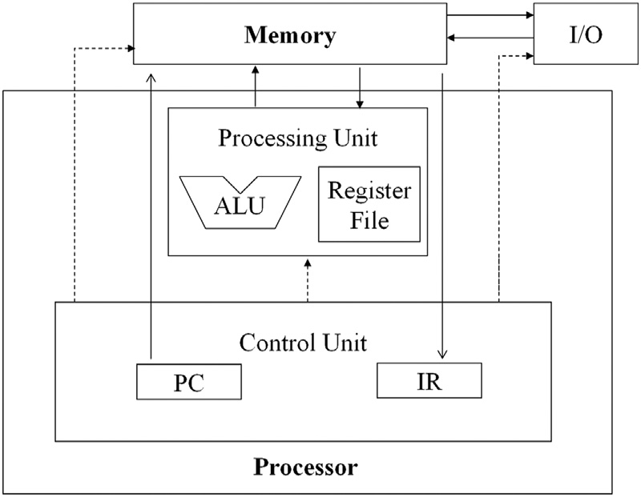
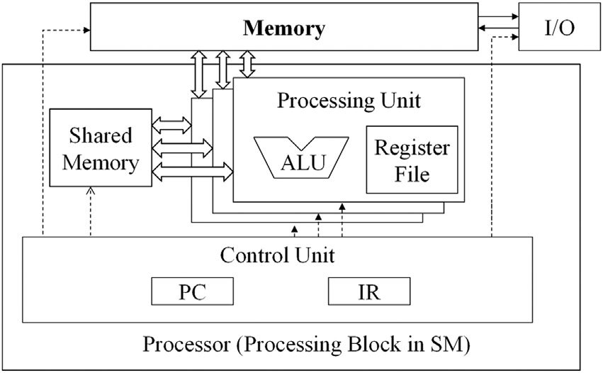

4.4 Warp和SIMD硬件
我们已经看到，block之间可以以任何顺序执行，这允许在不同设备上实现透明的可伸缩性。然而，我们没有详细讨论每个block内线程的执行时间。从概念上讲，应该假设block内的线程可以相互之间以任何顺序执行。在具有阶段性的算法中，每当我们希望确保所有线程在开始下一阶段之前都已经完成前一阶段的执行时，应使用屏障同步。如果没有使用屏障同步，内核执行的正确性不应依赖于某些线程会彼此同步执行的假设。
CUDA GPU中的线程调度是一个硬件实现概念，因此必须在具体硬件实现的背景下讨论。在目前的大多数实现中，一旦一个block被分配给一个SM（流式多处理器），它将进一步划分为32线程的单元，称为warp。warp的大小是特定于实现的，在未来的GPU代中可能会有所变化。了解warp有助于理解和优化特定代CUDA设备上的CUDA应用程序的性能。
图4.6
线程调度中将block划分为warps
一个warp是SM中线程调度的单位。图4.6展示了在某个实现中block被划分为warp的情况。在这个例子中，有三个block——block1、block2和block3——都被分配到一个SM中。每个block进一步划分为warp以便进行调度。每个warp由32个连续的threadIdx值的线程组成：线程0到31形成第一个warp，线程32到63形成第二个warp，依此类推。我们可以根据给定的block大小和分配给每个SM的block数来计算一个SM中包含的warp数量。在这个例子中，如果每个block有256个线程，我们可以确定每个block有256/32，即8个warp。由于SM中有三个block，所以我们有8 * 3 = 24个warp在SM中。
Block根据线程索引划分为warp（线程束）。如果一个block被组织成一维数组，即只使用threadIdx.x，那么划分是很简单的。warp中的threadIdx.x值是连续且递增的。对于32大小的warp，warp 0从线程0开始，到线程31结束；warp 1从线程32开始，到线程63结束，依此类推。一般来说，warp n从线程32n开始，到线程32(n+1)-1结束。对于大小不是32的倍数的block，最后一个warp将填充无效线程以填满32个线程位置。例如，如果一个block有48个线程，它将被划分为两个warp，第二个warp将填充16个无效线程。
对于由多个维度的线程组成的block，在分配到多个warp之前，这些维度会投影到一个线性化的行优先布局中。线性布局的确定方法是将具有较大y和z坐标的行放在具有较小y和z坐标的行之后。也就是说，如果一个block由两个维度的线程组成，那么线性布局的形成方式是将所有threadIdx.y为1的线程放在所有threadIdx.y为0的线程之后。threadIdx.y为2的线程会放在threadIdx.y为1的线程之后，依此类推。具有相同threadIdx.y值的线程会按照threadIdx.x值递增的顺序连续排列。
图4.7
将2D的线程映射成线性布局
图4.7展示了将一个二维block的线程放置到线性布局中的示例。上半部分展示了该block的二维视图。读者应认识到其与二维数组的行优先布局的相似性。每个线程表示为Ty,x，其中x表示threadIdx.x，y表示threadIdx.y。图4.7的下半部分展示了block的线性化视图。前四个线程是threadIdx.y值为0的线程；它们按threadIdx.x值递增的顺序排列。接下来的四个线程是threadIdx.y值为1的线程，它们也按threadIdx.x值递增的顺序排列。在这个例子中，所有16个线程形成了半个warp。warp将会填充另16个线程以完成一个32线程的warp。想象一个有8x8个线程的二维块。这64个线程将形成两个warp。第一个warp从T0,0开始，到T3,7结束。第二个warp从T4,0开始，到T7,7结束。读者可以通过绘制图示来进行练习，这会很有帮助。
对于一个三维的block，我们首先将所有threadIdx.z值为0的线程按线性顺序排列。这些线程被视为一个二维的block，如图4.7所示。接下来将所有threadIdx.z值为1的线程按线性顺序排列，依此类推。例如，对于一个三维2×8×4的块（x维度为4，y维度为8，z维度为2），这64个线程将被划分成两个warps，第一个warp包含从T0,0,0到T0,7,3的线程，第二个warp包含从T1,0,0到T1,7,3的线程。
一个SM 设计用于按照单指令多数据 (SIMD) 模型执行一个warp中的所有线程。也就是说，在任意时刻，所有线程将获取并执行同一条指令（参见“Warps和SIMD硬件”边栏）。图4.8展示了SM中的core如何分组为处理块，每8个core组成一个处理块并共享一个指令获取/分派单元。以实际例子为例，Ampere A100 SM拥有64个core，被组织为四个处理块，每个处理块有16个core。同一warp中的线程被分配到同一个处理块，该处理块获取指令并同时为warp中的所有线程执行它。这些线程对数据的不同部分应用相同的指令。由于SIMD硬件有效地限制了一个warp中的所有线程在任何时刻执行相同的指令，因此warp的执行行为通常被称为单指令多线程。
图4.8
为了SIMD执行方式，SM被组织成处理块
SIMD的优势在于控制硬件（例如指令获取/分派单元）的成本在许多执行单元之间共享。这种设计选择允许更小比例的硬件用于控制，而更大比例的硬件用于增加算术吞吐量。我们预期在可预见的未来，warp分区将继续是一种流行的实现技术。然而，warp的大小可能因具体实现而有所不同。到目前为止，所有CUDA设备都使用了相似的warp配置，每个warp包含32个线程。
Warp和SIMD硬件
在他于1945年发表的开创性报告中，约翰·冯·诺依曼描述了一种构建电子计算机的模型，该模型基于先驱计算机EDVAC的设计。这个模型现在通常被称为“冯·诺依曼模型”，并且成为几乎所有现代计算机的基础蓝图。
冯·诺依曼模型如以下图所示。计算机具有输入/输出（I/O）功能，允许程序和数据输入到系统中并从系统中生成。为了执行程序，计算机首先将程序及其数据输入到内存中。

该程序由一系列指令组成。控制单元维护一个程序计数器 (PC)，其中包含下一条要执行的指令的内存地址。在每个“指令周期”中，控制单元使用PC将一条指令提取到指令寄存器 (IR) 中。然后检查指令位，以确定计算机所有组件将要执行的操作。这也是该模型被称为“存储程序”模型的原因，这意味着用户可以通过将不同的程序存储到内存中来改变计算机的行为。
执行线程作为warp的动机在以下改进的冯·诺依曼模型中得以体现，该模型经过调整以反映GPU的设计。处理器对应于图4.8中的一个处理块，只有一个控制单元用于获取和分派指令。相同的控制信号（图4.8中从控制单元到处理单元的箭头）传送到多个处理单元，每个处理单元对应于SM中的一个核心，每个核心执行warp中的一个线程。

由于所有处理单元都由控制单元的指令寄存器 (IR) 中的同一指令控制，它们的执行差异来自寄存器文件中不同的数据操作数值。这在处理器设计中称为单指令多数据 (SIMD)。例如，尽管所有处理单元（核心）都由一条指令控制，如 add r1, r2, r3，但不同处理单元中的 r2 和 r3 的内容是不同的。
现代处理器中的控制单元非常复杂，包括用于获取指令的复杂逻辑和指令缓存的访问端口。多个处理单元共享一个控制单元可以显著减少硬件制造成本和功耗。